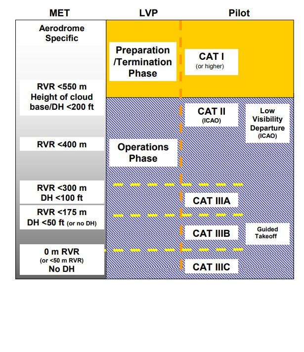

Lesson 01: LVO Concept, Categories and Requirements
Learning objectives
- Define all weather operations (AWO), LVO and LVP.
- State the ICAO approach categories and the company CAT II minima.
- List the four conditions required before any LVO.

All weather operations
All weather operations (AWO) means operating an aircraft in low visibility conditions. It includes low visibility take-off (LVTO), lower than standard CAT I, other than standard CAT II, standard CAT II and CAT III. The aim is to keep traffic regular in low visibility with a level of safety equivalent to normal operations.
Low visibility operations (LVO) consist of three phases:
- low visibility taxi;
- low visibility take-off (LVTO);
- low visibility approach and landing.
Low visibility procedures (LVP) are the procedures applied at an aerodrome to protect these operations: protection of the runway against incursion and of the accuracy and integrity of the ILS signals. LVP are established for departures with RVR below 550 m, for CAT II and III approaches, and when weather prevents full visual observation of the manoeuvring area.

Approach categories (ICAO)
| Category | Decision height | RVR |
|---|---|---|
| I | Not lower than 200 ft | Visibility ≥ 800 m or RVR ≥ 550 m |
| II | Lower than 200 ft, not lower than 100 ft | RVR ≥ 300 m (ICAO) |
| III | Lower than 100 ft, or no DH | RVR below 300 m, or no RVR limitation |
ICAO and EASA now group the former CAT IIIA, IIIB and IIIC as CAT III. When the DH and the RVR fall in different categories, the operation is conducted in the most demanding category. The company definition of CAT II also specifies the RVR at the measuring points: RVR A (threshold / touchdown zone), RVR B (mid-point) and RVR C (roll-out end).
Company authorisation
| Domestic Airlines — B737-800 LVO authorisation (company AWO procedures) | |
|---|---|
| Approach | CAT II only — DH 100 ft, TDZ RVR 350 m, MID RVR 175 m; autoland mandatory |
| Low visibility take-off | Minimum RVR 175 m — TDZ and MID RVR required |
| Pilot flying | The captain (left seat) is PF in all phases of LVO |
| Fleet | B737-800 only. Dash 8-Q400 and Q200: no LVO authorisation (CAT I operations) |
The company documents also state that the B737NG fleet is certified for CAT IIIA; the company authorisation is CAT II. Always check the current AOC operations specifications and the OM A.
Four conditions before any LVO
- Operator — authorised by the Authority (DACM) for the operation.
- Crew — trained, checked and current for LVO. Both pilots must be qualified.
- Aircraft — certified for the operation (CAT II autoland) with the required equipment serviceable.
- Aerodrome — LVP declared in force, with the required ground equipment serviceable.
LVO in operation may be announced by ATIS, GND or TWR when RVR is below 800 m; LVTO procedures must be in operation when RVR is below 400 m. When LVO is in operation and the RVR is above CAT I minimums, non-qualified crews are not authorised to conduct low visibility taxi, take-off or approach.
Key takeaways
- LVO = LV taxi + LVTO + LV approach; LVP protect the runway and the ILS.
- CAT I: DH 200 ft, RVR 550 m; CAT II: DH 100–200 ft; CAT III: below 100 ft or no DH.
- Company B737-800: CAT II only — DH 100 ft, TDZ RVR 350 m, autoland mandatory; LVTO 175 m; captain PF.
- Operator, crew, aircraft and aerodrome must all be qualified.
Knowledge check
Which four elements must all be qualified before any LVO?